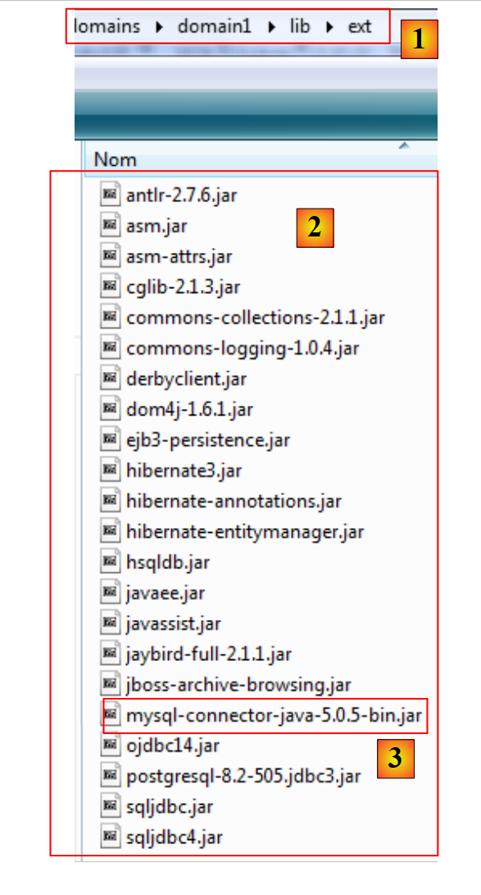
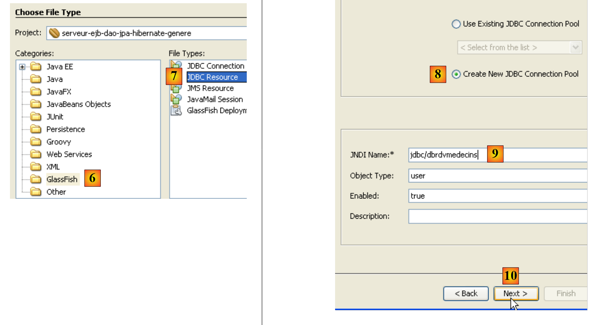

4. 用于预约的 J2EE Web 服务
让我们回到即将构建的应用程序的架构：
在本节中，我们将重点介绍如何构建在 Sun/Glassfish 服务器上运行的 J2EE Web 服务 [1]。
4.1. 数据库
我们将该数据库命名为 [ dbrdvmedecins]，这是一个包含四个表的 MySQL5 数据库：

4.1.1. [MEDECINS] 表
该表包含由 [RdvMedecins] 应用程序管理的医生信息。
- ID：医生的ID号——该表的主键
- VERSION：用于标识表中该行版本的数字。每次对该行进行修改时，该数字都会增加1。
- LAST_NAME：医生的姓
- FIRST_NAME：医生的名字
- TITLE：称谓（Ms.、Mrs.、Mr.）
4.1.2. [CLIENTS] 表
各医生的患者信息存储在 [CLIENTS] 表中：
- ID：用于标识客户的ID号——该表的主键
- VERSION：标识该表中该行版本的编号。每次对该行进行修改时，该编号会递增1。
- LAST NAME：客户的姓
- 名字：客户的名字
- 称谓：称谓（Ms.、Mrs.、Mr.）
4.1.3. [SLOTS] 表
该表格列出了可预约的时间段：
- ID：时间段的ID号——该表的主键（第8行）
- VERSION：标识表中该行版本的编号。每次对该行进行修改时，该编号会递增1。
- DOC_ID：标识该时段所属医生的ID号——作为DOCTORS表中ID列的外键。
- START_TIME：时间段的开始时间
- MSTART：时间段的起始分钟
- HFIN：时段结束时间
- MFIN：该时段的结束分钟
例如，[SLOTS] 表（参见上文 [1]）的第二行表明，第 2 号时段于上午 8:20 开始，上午 8:40 结束，属于第 1 号医生（Marie PELISSIER 女士）。
4.1.4. [RV] 表
该表列出了每位医生已预约的就诊时间：
- ID：预约的唯一标识符——主键
- DAY：预约日期
- SLOT_ID：预约时段——作为外键关联至[SLOTS]表的[ID]字段——同时确定时段及负责医生。
- CLIENT_ID：预约对象的客户ID——作为[CLIENTS]表中[ID]字段的外键
该表对关联列（DAY、SLOT_ID）的值设置了唯一性约束：
ALTER TABLE RV ADD CONSTRAINT UNQ1_RV UNIQUE (JOUR, ID_CRENEAU);
如果 [RV] 表中某行 (DAY, SLOT_ID) 列的值为 (DAY1, SLOT_ID1)，则该值不能出现在其他任何地方。否则，这意味着同一医生在同一时间被预约了两次。从 Java 编程的角度来看，当这种情况发生时，数据库的 JDBC 驱动程序会抛出一个 SQLException。
ID 为 3 的行（参见上文 [1]）表示，2006 年 8 月 23 日为第 20 个时段和第 4 号客户预订了一次预约。[SLOTS] 表告诉我们，第 20 个时段对应于下午 4:20 至 4:40，并属于第 1 号医生（Marie PELISSIER 女士）。 [CLIENTS] 表显示，客户编号 4 是 Brigitte BISTROU 女士。
4.2. 数据库创建
请使用您选择的工具创建MySQL数据库[dbrdvmedecins]。要创建表并向其中插入数据，您可以使用提供的[createbd.sql]脚本。其内容如下：
| create table CLIENTS (
ID bigint not null auto_increment,
VERSION integer not null,
TITRE varchar(5) not null,
NOM varchar(30) not null,
PRENOM varchar(30) not null,
primary key (ID)
) ENGINE=InnoDB;
create table CRENEAUX (
ID bigint not null auto_increment,
VERSION integer not null,
HDEBUT integer not null,
MDEBUT integer not null,
HFIN integer not null,
MFIN integer not null,
ID_MEDECIN bigint not null,
primary key (ID)
) ENGINE=InnoDB;
create table MEDECINS (
ID bigint not null auto_increment,
VERSION integer not null,
TITRE varchar(5) not null,
NOM varchar(30) not null,
PRENOM varchar(30) not null,
primary key (ID)
) ENGINE=InnoDB;
create table RV (
ID bigint not null auto_increment,
JOUR date not null,
ID_CLIENT bigint not null,
ID_CRENEAU bigint not null,
primary key (ID)
) ENGINE=InnoDB;
alter table CRENEAUX
add index FK9BD7A197FE16862 (ID_MEDECIN),
add constraint FK9BD7A197FE16862
foreign key (ID_MEDECIN)
references MEDECINS (ID);
alter table RV
add index FKA4494D97AD2 (ID_CLIENT),
add constraint FKA4494D97AD2
foreign key (ID_CLIENT)
references CLIENTS (ID);
alter table RV
add index FKA441A673246 (ID_CRENEAU),
add constraint FKA441A673246
foreign key (ID_CRENEAU)
references CRENEAUX (ID);
INSERT INTO CLIENTS ( VERSION, NOM, PRENOM, TITRE) VALUES (1, 'MARTIN', 'Jules', 'Mr');
...
INSERT INTO MEDECINS ( VERSION, NOM, PRENOM, TITRE) VALUES (1, 'PELISSIER', 'Marie', 'Mme');
...
INSERT INTO CRENEAUX ( VERSION, ID_MEDECIN, HDEBUT, MDEBUT, HFIN, MFIN) VALUES (1, 1, 8, 0, 8, 20);
...
INSERT INTO RV ( JOUR, ID_CRENEAU, ID_CLIENT) VALUES ('2006-08-22', 1, 2);
...
ALTER TABLE RV ADD CONSTRAINT UNQ1_RV UNIQUE (JOUR, ID_CRENEAU);
COMMIT WORK;
|
4.3. 服务器端架构组件
让我们回到待构建应用程序的架构：
在服务器端，该应用程序将包含：
- 一个 JPA 层，用于通过对象与数据库进行交互
- 一个负责管理与 JPA 层交互操作的 EJB
- 一个 Web 服务，负责以 Web 服务的形式向远程客户端暴露 EJB 接口。
元素 (b) 和 (c) 实现了前一图中所示的 [DAO] 层。我们知道，应用程序可以通过 RMI 和 JNDI 协议访问远程 EJB。实际上，这将客户端限制为 Java 客户端。Web 服务使用一种标准化的通信协议，多种语言均可实现该协议：.NET、PHP、C++ 等。这就是我们在此想要通过 .NET 客户端演示的内容。
关于 Web 服务的简要介绍，请参阅课程 [ref1] 第 109 页第 14 段。
Web 服务可通过以下两种方式实现：
- 通过在 Web 容器中运行的、带有 @WebService 注解的类
- 由一个带有 @WebService 注解并在 EJB 容器中运行的 EJB 实现
这里我们将采用第一种解决方案：
在课程[ref1]第109页第14段中，你会看到一个使用第二种解法的例子。
4.4. ，以及 GlassFish 服务器的 Hibernate 配置
根据版本不同，NetBeans 随附的 GlassFish V2 服务器可能不包含 JPA/Hibernate 层所需的 Hibernate 库。 如果您在继续学习本教程时发现 GlassFish 未提供 JPA/Hibernate 实现，或者在服务部署过程中发生异常，提示无法找到 Hibernate 库，则必须将这些库添加到 [<glassfish>/domains/domain1/lib/ext] 文件夹中，然后重启 GlassFish 服务器：
 |
- 在 [1] 中，<glassfish>/.../lib/ext 文件夹
- 在 [2] 中，Hibernate 库以及若干 JDBC 驱动程序
- 在 [3] 中，MySQL JDBC 驱动程序
|
Hibernate 库已包含在随教程提供的 ZIP 文件中。
4.5. NetBeans 的自动生成工具
让我们回到需要构建的架构：
借助 NetBeans，可以自动生成 [JPA] 层以及控制对生成的 JPA 实体访问权限的 [EJB] 层。熟悉这些自动生成方法非常有用，因为生成的代码能为如何编写 JPA 实体或使用这些实体的 EJB 代码提供宝贵的参考。
接下来我们将介绍其中一些自动生成工具。要理解生成的代码，您需要对 JPA 实体 [ref1] 和 EJB [ref2] 有扎实的掌握。
创建 NetBeans 与数据库的连接
- 启动 MySQL 5 数据库管理系统，确保数据库可用
- 创建一个连接到 [dbrdvmedecins] 数据库的 NetBeans 连接
- 在 [文件] 选项卡的 [数据库] 部分 [1] 中，选择 MySQL JDBC 驱动程序 [2]
- 然后选择 [3] “使用” 选项，以建立与 MySQL 数据库的连接
- 在 [4] 中，输入所需信息
- 然后在 [5] 处确认
- 在 [6] 中，连接已建立。您可以查看已连接数据库中的四个表。
创建 EJB 项目
- 在 [1] 中，创建一个新应用程序，即 EJB 模块
- 在 [2] 中，选择 [Java EE] 类别，并在 [3] 中选择 [EJB 模块] 类型
- 在 [4] 中，为项目选择一个文件夹，并在 [5] 中为其命名——然后完成向导
- 在 [6] 中，生成的项目
向 GlassFish 服务器添加 JDBC 资源
我们将向 GlassFish 服务器添加一个 JDBC 资源。
- 在 [服务] 选项卡中，启动 GlassFish 服务器 [2, 3]
- 在 [项目] 选项卡中，右键单击 EJB 项目，然后在 [5] 中选择 [新建 / 其他] 选项，向项目中添加一个元素。

- 在 [6] 中，选择 [GlassFish] 类别；在 [7] 中，通过选择 [JDBC 资源] 类型来指定要创建 JDBC 资源
- 在 [8] 中，指定此 JDBC 资源将使用其自身的连接池
- 在 [9] 中，为该 JDBC 资源命名
- 在[10]中，继续进行下一步
- 在 [11] 中，定义 JDBC 资源连接池的特性
- 在 [12] 中，为连接池命名
- 在 [13] 中，选择之前创建的 NetBeans 连接 [dbrdvmedecins]
- 在 [14] 中，继续进行下一步
- 在 [15] 中，此页面通常无需更改。MySQL 数据库 [dbrdvmedecins] 的连接属性已从先前创建的 NetBeans 连接 [dbrdvmedecins] 中获取
- 在 [16] 中，继续进行下一步
- 在 [17] 中，保留提供的默认值
- [18]，完成向导。这将生成 [sun-resources.xml] 文件 [19]，内容如下：
| <?xml version="1.0" encoding="UTF-8"?>
<!DOCTYPE resources PUBLIC "-//Sun Microsystems, Inc.//DTD Application Server 9.0 Resource Definitions //EN" "http://www.sun.com/software/appserver/dtds/sun-resources_1_3.dtd">
<resources>
<jdbc-resource enabled="true" jndi-name="jdbc/dbrdvmedecins" object-type="user" pool-name="dbrdvmedecinsPool">
<description/>
</jdbc-resource>
<jdbc-connection-pool ...">
<property name="URL" value="jdbc:mysql://localhost:3306/dbrdvmedecins"/>
<property name="User" value="root"/>
<property name="Password" value="()"/>
</jdbc-connection-pool>
</resources>
|
上述文件包含向向导中输入的所有信息的 XML 格式。NetBeans IDE 将使用该文件，指示 GlassFish 服务器创建第 4 行中定义的“jdbc/dbrdvmedecins”资源。
创建持久化单元
持久化单元 [persistence.xml] 用于配置 JPA 层：它指定了所使用的 JPA 实现（TopLink、Hibernate 等）并对其进行配置。
- 在 [1] 中，右键单击 EJB 项目，并在 [2] 中选择 [新建 / 其他]
- 在 [3] 中，选择 [持久化] 类别，然后在 [4] 中，指定要创建一个 JPA 持久化单元
- 在 [5] 中，为创建的持久化单元命名
- 在 [6] 中，选择 [Hibernate] 作为 JPA 实现
- 在 [7] 中，选择刚刚创建的 GlassFish 资源“jdbc/dbrdvmedecins”
- 在 [8] 中，指定在实例化 JPA 层时不执行任何数据库操作
- 完成向导
- 在 [9] 中，由向导生成的 [persistence.xml] 文件
其内容如下：
| <?xml version="1.0" encoding="UTF-8"?>
<persistence version="1.0" xmlns="http://java.sun.com/xml/ns/persistence" xmlns:xsi="http://www.w3.org/2001/XMLSchema-instance" xsi:schemaLocation="http://java.sun.com/xml/ns/persistence http://java.sun.com/xml/ns/persistence/persistence_1_0.xsd">
<persistence-unit name="serveur-ejb-dao-jpa-hibernate-generePU" transaction-type="JTA">
<provider>org.hibernate.ejb.HibernatePersistence</provider>
<jta-data-source>jdbc/dbrdvmedecins</jta-data-source>
<exclude-unlisted-classes>false</exclude-unlisted-classes>
<properties/>
</persistence-unit>
</persistence>
|
同样，它将向导中提供的信息转换为 XML 格式。仅凭此文件还不足以操作 MySQL5 数据库“dbrdvmedecins”。我们需要向 Hibernate 指定要管理的数据库管理系统 (DBMS) 类型。这将在后续步骤中完成。
创建 JPA 实体
- 在 [1] 中，右键单击该项目，然后在 [2] 中选择 [新建 / 其他] 选项
- 在 [3] 中，选择 [持久化] 类别，然后在 [4] 中，指定要从现有数据库创建 JPA 实体。
- 在 [5] 中，选择我们创建的 JDBC 源“jdbc/dbrdvmedecins”
- 在 [6] 中，从关联的数据库中选择这四个表
- 在 [7,8] 中，将它们全部纳入 JPA 实体的生成
- 在 [9] 中，继续进行向导操作
- 在 [10] 中，即将生成的 JPA 实体
- 在 [11] 中，为 JPA 实体包命名
- 在 [12] 中，选择将封装 JPA 层返回的对象列表的 Java 类型
- 完成向导
- 在 [13] 中，生成的四个 JPA 实体，每个数据库表对应一个。
以下是 [Rv] 实体的代码示例，该实体表示 [dbrdvmedecins] 数据库中 [rv] 表的一行。
| package jpa;
...
@Entity
@Table(name = "rv")
public class Rv implements Serializable {
private static final long serialVersionUID = 1L;
@Id
@GeneratedValue(strategy = GenerationType.IDENTITY)
@Basic(optional = false)
@Column(name = "ID")
private Long id;
@Basic(optional = false)
@Column(name = "JOUR")
@Temporal(TemporalType.DATE)
private Date jour;
@JoinColumn(name = "ID_CRENEAU", referencedColumnName = "ID")
@ManyToOne(optional = false)
private Creneaux idCreneau;
@JoinColumn(name = "ID_CLIENT", referencedColumnName = "ID")
@ManyToOne(optional = false)
private Clients idClient;
public Rv() {
}
...
}
|
创建用于访问 JPA 实体的 EJB 层
- 在 [1] 中，右键单击项目，然后在 [2] 中选择 [新建 / 其他] 选项
- 在 [3] 中，选择 [持久化] 类别，然后在 [4] 中选择 [用于实体类的会话 Bean] 类型
- 在 [5] 中，将显示之前创建的 JPA 实体
- 在 [6] 中，全选它们
- 在 [7] 中，它们已被选中
- 在 [8] 中，继续进行向导操作
- 在 [9] 中，为将要生成的 EJB 包命名
- 在 [10] 中，指定 EJB 必须同时实现本地接口和远程接口
- 完成向导
- 在 [11] 中，生成的 EJB
例如，以下是管理对 [Rv] 实体的访问（从而管理对 [dbrdvmedecins] 数据库中 [rv] 表的访问）的 EJB 代码：
| package ejb;
...
@Stateless
public class RvFacade implements RvFacadeLocal, RvFacadeRemote {
@PersistenceContext
private EntityManager em;
public void create(Rv rv) {
em.persist(rv);
}
public void edit(Rv rv) {
em.merge(rv);
}
public void remove(Rv rv) {
em.remove(em.merge(rv));
}
public Rv find(Object id) {
return em.find(Rv.class, id);
}
public List<Rv> findAll() {
return em.createQuery("select object(o) from Rv as o").getResultList();
}
}
|
如前所述，自动代码生成对于启动项目以及学习 JPA 实体和 EJB 非常有用。在接下来的章节中，我们将使用自己的代码重写 JPA 和 EJB 层，但读者会发现其中包含我们在自动生成这些层时刚刚介绍过的内容。
4.6. EJB 模块的 NetBeans 项目
我们创建一个新的空 EJB 模块（参见第 4.5 节）：
- [rdvmedecins.entities] 包包含 JPA 层的实体
- [rdvmedecins.dao] 包实现了 [dao] 层的 EJB
- [rdvmedecins.exceptions] 包实现了应用程序专用的异常类
下文假设读者已按照第 4.5 节中的所有步骤操作。读者需要重复其中的一些步骤。
4.6.1. 配置 JPA 层
让我们回顾一下我们的客户端/服务器应用程序的架构：
NetBeans 项目：
[JPA] 层由上文提到的 [persistence.xml] 和 [sun-resources.xml] 文件进行配置。这两个文件是由我们之前已经用过的向导生成的：
- 第 4.5 节中描述了 [sun-resources.xml] 文件的生成过程。
- 第 4.5 节中描述了 [persistence.xml] 文件的生成过程。
生成的 [persistence.xml] 文件必须按以下方式进行修改：
| <?xml version="1.0" encoding="UTF-8"?>
<persistence version="1.0" xmlns="http://java.sun.com/xml/ns/persistence" xmlns:xsi="http://www.w3.org/2001/XMLSchema-instance" xsi:schemaLocation="http://java.sun.com/xml/ns/persistence http://java.sun.com/xml/ns/persistence/persistence_1_0.xsd">
<persistence-unit name="dbrdvmedecins" transaction-type="JTA">
<provider>org.hibernate.ejb.HibernatePersistence</provider>
<jta-data-source>jdbc/dbrdvmedecins</jta-data-source>
<properties>
<!-- Dialect -->
<property name="hibernate.dialect" value="org.hibernate.dialect.MySQL5InnoDBDialect"/>
</properties>
</persistence-unit>
</persistence>
|
- 第 3 行：事务类型为 JTA：事务将由 GlassFish EJB3 容器管理
- 第 4 行：使用 JPA/Hibernate 实现。为此，已将 Hibernate 库添加到 GlassFish 服务器中（参见第 4.4 节）。
- 第 5 行：JPA 层使用的 JTA 数据源的 JNDI 名称为“jdbc/dbrdvmedecins”。
- 第 8 行：此行不会自动生成，必须手动添加。它告知 Hibernate 所使用的数据库管理系统是 MySQL5。
“jdbc/dbrdvmedecins”数据源在以下 [sun-resources.xml] 文件中进行配置：
| <?xml version="1.0" encoding="UTF-8"?>
<!DOCTYPE resources PUBLIC "-//Sun Microsystems, Inc.//DTD Application Server 9.0 Resource Definitions //EN" "http://www.sun.com/software/appserver/dtds/sun-resources_1_3.dtd">
<resources>
<jdbc-resource enabled="true" jndi-name="jdbc/dbrdvmedecins" object-type="user" pool-name="dbrdvmedecinsPool">
<description/>
</jdbc-resource>
<jdbc-connection-pool ...>
<property name="URL" value="jdbc:mysql://localhost/dbrdvmedecins"/>
<property name="User" value="root"/>
<property name="Password" value="()"/>
</jdbc-connection-pool>
</resources>
|
- 第 8–10 行：数据源的 JDBC 属性（数据库 URL、用户名和密码）。MySQL 数据库 `dbrdvmedecins` 即第 4.1 节中所述的数据库。
- 第 7 行：与该数据源关联的连接池的特性
4.6.2. JPA 层的实体
让我们回顾一下我们的客户端/服务器应用程序的架构：
NetBeans 项目：
[rdvmedecins.entities] 包实现了 [JPA] 层。
在第 4.5 节中，我们了解了如何为应用程序自动生成 JPA 实体。这里我们将不使用该技术，而是自行定义实体。不过，这些实体将包含第 4.5 节中生成的许多代码。在此，我们希望 [Medecin] 和 [Client] 实体成为 [Personne] 类的子类。
Person 类用于表示医生和客户：
| package rdvmedecins.entites;
...
@MappedSuperclass
public class Personne implements Serializable {
// characteristics of a person
@Id
@GeneratedValue(strategy = GenerationType.AUTO)
@Column(name = "ID")
private Long id;
@Version
@Column(name = "VERSION", nullable = false)
private Integer version;
@Column(name = "TITRE", length = 5, nullable = false)
private String titre;
@Column(name = "NOM", length = 30, nullable = false)
private String nom;
@Column(name = "PRENOM", length = 30, nullable = false)
private String prenom;
// default builder
public Personne() {
}
// builder with parameters
public Personne(String titre, String nom, String prenom) {
// we use setters
...
}
// copy builder
public Personne(Personne personne) {
// we use setters
...
}
// toString
@Override
public String toString() {
return "[" + titre + "," + prenom + "," + nom + "]";
}
// getters and setters
....
}
|
- 第 3 行：请注意，[Person] 类本身并非实体（@Entity）。它将作为实体的父类。@MappedSuperClass 注解表明了这种情况。
[Client] 实体封装了 [clients] 表中的行。它继承自前面的 [Person] 类：
| package rdvmedecins.entites;
....
@Entity
@Table(name = "CLIENTS")
public class Client extends Personne implements Serializable {
// default builder
public Client() {
}
// builder with parameters
public Client(String titre, String nom, String prenom) {
// parent
super(titre, nom, prenom);
}
// copy builder
public Client(Client client) {
// parent
super(client);
}
}
|
- 第 3 行：[Client] 类是一个 JPA 实体
- 第 4 行：它与 [clients] 表相关联
- 第 5 行：它继承自 [Person] 类
封装 [doctors] 表中各行的 [Doctor] 实体遵循相同的模式：
| package rdvmedecins.entites;
...
@Entity
@Table(name = "MEDECINS")
public class Medecin extends Personne implements Serializable {
// default builder
public Medecin() {
}
// builder with parameters
public Medecin(String titre, String nom, String prenom) {
// parent
super(titre, nom, prenom);
}
// copy builder
public Medecin(Medecin medecin) {
// parent
super(medecin);
}
}
|
[Creneau] 实体封装了 [creneaux] 表中的行：
| package rdvmedecins.entites;
....
@Entity
@Table(name = "CRENEAUX")
public class Creneau implements Serializable {
// characteristics of a RV slot
@Id
@GeneratedValue(strategy = GenerationType.AUTO)
@Column(name = "ID")
private Long id;
@Version
@Column(name = "VERSION", nullable = false)
private Integer version;
@ManyToOne
@JoinColumn(name = "ID_MEDECIN", nullable = false)
private Medecin medecin;
@Column(name = "HDEBUT", nullable = false)
private Integer hdebut;
@Column(name = "MDEBUT", nullable = false)
private Integer mdebut;
@Column(name = "HFIN", nullable = false)
private Integer hfin;
@Column(name = "MFIN", nullable = false)
private Integer mfin;
// default builder
public Creneau() {
}
// builder with parameters
public Creneau(Medecin medecin, Integer hDebut,Integer mDebut, Integer hFin, Integer mFin) {
// we use setters
...
}
// copy builder
public Creneau(Creneau creneau) {
// we use setters
...
}
// toString
@Override
public String toString() {
return "[" + getId() + "," + getVersion() + "," + getMedecin() + "," + getHdebut() + ":" + getMdebut() + "," + getHfin() + ":" + getMfin() + "]";
}
// setters - getters
...
}
|
- 第 15–17 行描述了数据库中 [slots] 表与 [doctors] 表之间的“一对多”关系。
[Rv] 实体封装了 [rv] 表中的行：
| package rdvmedecins.entites;
...
@Entity
@Table(name = "RV")
public class Rv implements Serializable {
// features
@Id
@GeneratedValue(strategy = GenerationType.AUTO)
@Column(name = "ID")
private Long id;
@Column(name = "JOUR", nullable = false)
@Temporal(TemporalType.DATE)
private Date jour;
@ManyToOne
@JoinColumn(name = "ID_CLIENT", nullable = false)
private Client client;
@ManyToOne
@JoinColumn(name = "ID_CRENEAU", nullable = false)
private Creneau creneau;
// default builder
public Rv() {
}
// builder with parameters
public Rv(Date jour, Client client, Creneau creneau) {
// we use setters
...
}
// copy builder
public Rv(Rv rv) {
// we use setters
...
}
// toString
@Override
public String toString() {
return "[" + getId() + "," + new SimpleDateFormat("dd/MM/yyyy").format(getJour()) + "," + getClient() + "," + getCreneau() + "]";
}
// getters and setters
...
}
|
- 第 15–17 行描述了数据库中 [rv] 表与 [clients] 表之间的“一对多”关系，第 18–20 行描述了 [rv] 表与 [slots] 表之间的“一对多”关系
4.6.3. 异常类
该应用程序的异常类 [ RdvMedecinsException] 如下所示：
| package rdvmedecins.exceptions;
import javax.ejb.ApplicationException;
@ApplicationException(rollback=true)
public class RdvMedecinsException extends RuntimeException {
private static final long serialVersionUID = 1L;
// private fields
private int code = 0;
// manufacturers
public RdvMedecinsException() {
super();
}
public RdvMedecinsException(String message) {
super(message);
}
public RdvMedecinsException(String message, Throwable cause) {
super(message, cause);
}
public RdvMedecinsException(Throwable cause) {
super(cause);
}
public RdvMedecinsException(String message, int code) {
super(message);
setCode(code);
}
public RdvMedecinsException(Throwable cause, int code) {
super(cause);
setCode(code);
}
public RdvMedecinsException(String message, Throwable cause, int code) {
super(message, cause);
setCode(code);
}
// getters - setters
...
}
|
- 第 6 行：该类继承了 [RuntimeException] 类。因此，编译器不要求使用 try/catch 代码块来处理它。
- 第 5 行：@ApplicationException 注解确保该异常不会被 [EjbException] “吞噬”。
为了理解 @ApplicationException 注解，让我们重新审视一下服务器端架构：
[RdvMedecinsException] 异常将由 EJB3 容器内的 [dao] 层中的 EJB 方法抛出，并被该容器拦截。如果没有 @ApplicationException 注解，EJB3 容器会将发生的异常封装在 [EjbException] 中并重新抛出。 您可能不希望进行这种封装，而希望让 [RdvMedecinsException] 类型的异常从 EJB3 容器中逸出。这正是 @ApplicationException 注解所允许的。 此外，该注解的 (rollback=true) 属性指示 EJB3 容器：若在作为与 DBMS 事务一部分执行的方法中发生 [RdvMedecinsException] 类型的异常，则必须回滚该事务。在技术术语中，这被称为回滚事务。
4.6.4. [dao] 层的 EJB
[dao] 层的 Java 接口 [ IDao] 如下：
| package rdvmedecins.dao;
...
public interface IDao {
// customer list
public List<Client> getAllClients();
// list of doctors
public List<Medecin> getAllMedecins();
// list of physician slots
public List<Creneau> getAllCreneaux(Medecin medecin);
// list of doctor's appointments on a given day
public List<Rv> getRvMedecinJour(Medecin medecin, String jour);
// find a customer identified by its id
public Client getClientById(Long id);
// find a customer identified by its id
public Medecin getMedecinById(Long id);
// find an Rv identified by its id
public Rv getRvById(Long id);
// find a time slot identified by its id
public Creneau getCreneauById(Long id);
// add a RV to the list
public Rv ajouterRv(String jour, Creneau creneau, Client client);
// delete a RV
public void supprimerRv(Rv rv);
}
|
该 EJB 的本地接口 [IDaoLocal] 只是继承了之前的 [IDao] 接口：
| package rdvmedecins.dao;
import javax.ejb.Local;
@Local
public interface IDaoLocal extends IDao{
}
|
远程接口 [IDaoRemote] 也是如此：
| package rdvmedecins.dao;
import javax.ejb.Remote;
@Remote
public interface IDaoRemote extends IDao {
}
|
该 EJB [DaoJpa] 同时实现了本地和远程接口：
| package rdvmedecins.dao;
...
@Stateless(mappedName="rdvmedecins.dao")
@TransactionAttribute(TransactionAttributeType.REQUIRED)
public class DaoJpa implements IDaoLocal,IDaoRemote {
...
}
|
- 第 3 行表明远程 EJB 的名称为 "rdvmedecins.dao"
- 第 4 行表示 EJB 的所有方法都在由 EJB3 容器管理的事务中执行。
- 第 5 行显示该 EJB 实现了本地和远程接口。
完整的 EJB 代码如下：
| package rdvmedecins.dao;
...
@Stateless(mappedName="rdvmedecins.dao")
@TransactionAttribute(TransactionAttributeType.REQUIRED)
public class DaoJpa implements IDaoLocal,IDaoRemote {
@PersistenceContext
private EntityManager em;
// customer list
public List<Client> getAllClients() {
try {
return em.createQuery("select c from Client c").getResultList();
} catch (Throwable th) {
throw new RdvMedecinsException(th, 1);
}
}
// list of doctors
public List<Medecin> getAllMedecins() {
try {
return em.createQuery("select m from Medecin m").getResultList();
} catch (Throwable th) {
throw new RdvMedecinsException(th, 2);
}
}
// list of time slots for a given doctor
// doctor: the doctor
public List<Creneau> getAllCreneaux(Medecin medecin) {
try {
return em.createQuery("select c from Creneau c join c.medecin m where m.id=:idMedecin").setParameter("idMedecin", medecin.getId()).getResultList();
} catch (Throwable th) {
throw new RdvMedecinsException(th, 3);
}
}
// list of appointments for a given doctor on a given day
// doctor: the doctor
// day: the day
public List<Rv> getRvMedecinJour(Medecin medecin, String jour) {
try {
return em.createQuery("select rv from Rv rv join rv.creneau c join c.medecin m where m.id=:idMedecin and rv.jour=:jour").setParameter("idMedecin", medecin.getId()).setParameter("jour", new SimpleDateFormat("yyyy:MM:dd").parse(jour)).getResultList();
} catch (Throwable th) {
throw new RdvMedecinsException(th, 4);
}
}
// add Rv
// day : day of appointment
// creneau: Rv time slot
// customer: customer for whom the appointment is taken
public Rv ajouterRv(String jour, Creneau creneau, Client client) {
try {
Rv rv = new Rv(new SimpleDateFormat("yyyy:MM:dd").parse(jour), client, creneau);
em.persist(rv);
return rv;
} catch (Throwable th) {
throw new RdvMedecinsException(th, 5);
}
}
// deleting an appointment
// rv: Rv deleted
public void supprimerRv(Rv rv) {
try {
em.remove(em.merge(rv));
} catch (Throwable th) {
throw new RdvMedecinsException(th, 6);
}
}
// retrieve a specific customer
public Client getClientById(Long id) {
try {
return (Client) em.find(Client.class, id);
} catch (Throwable th) {
throw new RdvMedecinsException(th, 7);
}
}
// retrieve a specific doctor
public Medecin getMedecinById(Long id) {
try {
return (Medecin) em.find(Medecin.class, id);
} catch (Throwable th) {
throw new RdvMedecinsException(th, 8);
}
}
// retrieve a given Rv
public Rv getRvById(Long id) {
try {
return (Rv) em.find(Rv.class, id);
} catch (Throwable th) {
throw new RdvMedecinsException(th, 9);
}
}
// retrieve a given slot
public Creneau getCreneauById(Long id) {
try {
return (Creneau) em.find(Creneau.class, id);
} catch (Throwable th) {
throw new RdvMedecinsException(th, 10);
}
}
}
|
- 第 8 行：管理对持久化上下文访问的 EntityManager 对象。当类被实例化时，EJB 容器会根据第 7 行中的 @PersistenceContext 注解初始化此字段。
- 第 15 行：JPQL 查询，用于将 [clients] 表中的所有行作为 [Client] 对象列表返回。
- 第 22 行：针对医生表的类似查询
- 第 32 行：一个对 [slots] 和 [doctors] 表执行连接操作的 JPQL 查询。该查询通过医生的 ID 进行参数化。
- 第 43 行：一个对 [appointments]、[slots] 和 [doctors] 表执行连接的 JPQL 查询，该查询有两个参数：医生的 ID 和预约日期。
- 第 55–57 行：创建预约并将其持久化到数据库中。
- 第 67 行：从数据库中删除一个预约。
- 第 76 行：对数据库执行 SELECT 查询以查找特定客户
- 第 85 行：针对医生的操作同上
- 第 94 行：对预约执行相同操作
- 第 103 行：对时间段执行相同操作
- 第 9 行起涉及持久化上下文的所有操作都可能遇到数据库问题。因此，这些操作均被封装在 try/catch 代码块中。任何异常都会被封装在自定义异常 RdvMedecinsException 中。
编译完成后，EJB 模块会生成一个名为“ ”的 .jar 文件：
4.7. 使用 NetBeans 部署 [DAO] 层 EJB
NetBeans 允许您轻松地将之前创建的 EJB 部署到 GlassFish 服务器上。
- 在 EJB 项目属性中，勾选运行时选项 [1]。
- 在 [2] 中，输入将部署 EJB 的服务器名称
- 在 [服务] 选项卡 [3] 中，启动它 [4]。
- 在 [5] 中，GlassFish 服务器已启动。目前尚未部署 EJB 模块。
- 启动 MySQL 服务器，并确保 [dbrdvmedecins] 数据库处于联机状态。为此，您可以使用第 4.5 节中创建的 NetBeans 连接。
- 在 [Projects] 选项卡 [6] 中，部署 EJB 模块 [7]：MySQL5 数据库管理系统必须正在运行，EJB 使用的 JDBC 资源 "jdbc/dbrdvmedecins" 才能被访问。
- 在 [8] 中，已部署的 EJB 会显示在 GlassFish 服务器树中
- 在 [9] 中，移除已部署的 EJB
- 在 [10] 中，EJB 不再出现在 GlassFish 服务器树中。
4.8. 使用 GlassFish 部署来自 [DAO] 层的 EJB
本文将演示如何从 .jar 归档文件将 EJB 部署到 GlassFish 服务器。
- 启动 MySQL 服务器，并确保 [dbrdvmedecins] 数据库处于联机状态。为此，您可以使用第 4.5 节中创建的 NetBeans 连接。
让我们回顾一下待部署的 EJB 模块的 JPA 配置。该配置定义在 [persistence.xml] 文件中：
| <?xml version="1.0" encoding="UTF-8"?>
<persistence version="1.0" xmlns="http://java.sun.com/xml/ns/persistence" xmlns:xsi="http://www.w3.org/2001/XMLSchema-instance" xsi:schemaLocation="http://java.sun.com/xml/ns/persistence http://java.sun.com/xml/ns/persistence/persistence_1_0.xsd">
<persistence-unit name="dbrdvmedecins" transaction-type="JTA">
<provider>org.hibernate.ejb.HibernatePersistence</provider>
<jta-data-source>jdbc/dbrdvmedecins</jta-data-source>
<properties>
<!-- Dialect -->
<property name="hibernate.dialect" value="org.hibernate.dialect.MySQL5InnoDBDialect"/>
</properties>
</persistence-unit>
</persistence>
|
第 5 行表明 JPA 层使用了一个 JTA 数据源，即由 EJB3 容器管理的、名为“jdbc/dbrdvmedecins”的数据源。
我们在第 4.5 节中已经了解了如何使用 NetBeans 创建此 JDBC 资源。在此，我们将展示如何直接在 GlassFish 中进行操作。我们将遵循 [ref1] 第 79 页第 13.1.2 节中描述的步骤。
首先，我们将删除该资源以便重新创建。此操作在 NetBeans 中进行：
- 在 [1] 中，GlassFish 服务器的 JDBC 资源
- 在 [2] 中，我们的 EJB 的 "jdbc/dbrdvmedecins" 资源
- 在 [3] 中，此 JDBC 资源的连接池
- 在 [4] 中，我们删除连接池。这将导致所有使用该连接池的 JDBC 资源被删除，包括“jdbc/dbrdvmedecins”资源。
- 在 [5] 和 [6] 中，JDBC 资源和连接池已被销毁。
现在，我们使用 GlassFish 服务器管理控制台创建 JDBC 资源并部署 EJB。
- 在 NetBeans 的 [服务] 选项卡 [1] 中，启动 GlassFish 服务器 [2]，然后访问 [3] 其管理控制台
- 在 [4] 中，请以管理员身份登录（密码：adminadmin，如果您在安装过程中或之后未更改过）。
- 在 [5] 中，选择 GlassFish 资源的 [连接池] 分支
- 在 [6] 中，创建一个新的连接池。请注意，连接池是一种用于限制与数据库管理系统（DBMS）之间建立和关闭的连接数量的技术。当服务器启动时，会向 DBMS 建立 N 个连接（N 由配置定义）。这些已建立的连接随后可供请求它们的 EJB 使用，以便与 DBMS 执行操作。一旦操作完成，EJB 就会将连接归还给连接池。 连接永远不会被关闭；它会在访问 DBMS 的各个线程之间共享
- 在 [7] 中，为连接池命名
- 在[8]中，表示数据源的类是[javax.sql.DataSource]类
- 在 [9] 中，包含该数据源的 DBMS 这里是 MySQL。
- 在 [10] 中，继续执行下一步
- 在 [11] 中，“Connection Validation Required” 属性确保在授予连接之前，连接池会验证该连接是否正常工作。如果不是，则创建一个新的连接。这使得应用程序在 DBMS 发生临时中断后仍能继续运行。中断期间，所有连接均不可用，并将向客户端抛出异常。 当中断结束时，继续请求连接的客户端将再次获得连接：得益于“Connection Validation Required”属性，连接池中的所有连接都将被重新创建。如果没有此属性，连接池虽然会检测到初始连接已丢失，但不会尝试创建新的连接。
- 在[12]中，事务被指定为“已提交读”隔离级别。该级别确保事务T2无法读取事务T1修改的数据，直到后者完全完成。
- 在[13]中，我们规定所有事务必须使用[12]中指定的隔离级别
- 在[14]和[15]中，指定由连接池管理的数据库的URL
- 在 [16] 中，用户为 root
- 在 [17] 中，添加一个属性
- 在 [18] 中，添加“Password”属性，并在 [19] 中将其值设为 ()。尽管截图 [19] 未显示此内容，但请勿输入空字符串；应输入 ()（左括号、右括号）以表示空密码。如果您的 MySQL 数据库管理系统 (DBMS) 的 root 用户具有非空密码，请输入该密码。
- 在 [20] 中，完成 MySQL 数据库 [dbrdvmedecins] 的连接池创建向导。
- 在 [21] 中，连接池已创建完成。点击其链接。
- 在[22]中，[Ping]按钮可用于与[dbrdvmedecins]数据库建立连接
- 在[23]处，如果一切顺利，将显示一条消息，表明连接成功
创建连接池后，您可以创建一个 JDBC 资源：
- 在 [1] 中，从服务器对象树中选择 [JDBC Resources] 分支
- 在 [2] 中，创建一个新的 JDBC 资源
- 在 [3] 中，为 JDBC 资源命名。该名称必须与 [persistence.xml] 文件中使用的名称一致：
<jta-data-source>jdbc/dbrdvmedecins</jta-data-source>
- 在 [4] 中，指定新 JDBC 资源应使用的连接池：即您刚刚创建的那个
- 在 [5] 中，我们完成创建向导
现在 JDBC 资源已创建完成，您可以部署 EJB 的 JAR 文件：
- 在 [1] 中，选择 [企业应用程序] 分支
- 在 [2] 中，点击 [部署] 按钮，表示您要部署一个新应用程序
- 在 [3] 中，指定该应用程序为 EJB 模块
- 在 [4] 中，选择实验中提供的 EJB JAR 文件 [serveur-ejb-dao-jpa-hibernate.jar]。
- 在 [5] 中，您可以根据需要更改 EJB 模块的名称
- 在 [6] 中，完成 EJB 模块部署向导
- 在 [7] 中，EJB 模块已部署完成。现在可以使用它了。
4.9. 测试 [DAO] 层的 EJB
既然我们应用程序[DAO]层的EJB已部署完毕，现在可以对其进行测试。我们将使用以下Java客户端进行测试：
[MainTestsDaoRemote] 类 [1] 是一个 JUnit 4 测试类。[2] 中的库包括：
- [DAO] 层的 EJB JAR [3]（参见第 4.6.4 节）。
- 远程 EJB 客户端所需的 GlassFish 库 [4]。
测试类如下：
| package dao;
...
public class MainTestsDaoRemote {
// layer [dao] tested
private static IDaoRemote dao;
@BeforeClass
public static void init() throws NamingException {
// environment initialization JNDI
InitialContext initialContext = new InitialContext();
// dao layer instantiation
dao = (IDaoRemote) initialContext.lookup("rdvmedecins.dao");
}
@Test
public void test1() {
// tEST DATA
String jour = "2006:08:23";
// customer display
List<Client> clients = null;
try {
clients = dao.getAllClients();
display("Liste des clients :", clients);
} catch (Exception ex) {
System.out.println(ex);
}
// physician display
List<Medecin> medecins = null;
try {
medecins = dao.getAllMedecins();
display("Liste des médecins :", medecins);
} catch (Exception ex) {
System.out.println(ex);
}
// display doctor's slots
Medecin medecin = medecins.get(0);
List<Creneau> creneaux = null;
try {
creneaux = dao.getAllCreneaux(medecin);
display(String.format("Liste des créneaux du médecin %s", medecin), creneaux);
} catch (Exception ex) {
System.out.println(ex);
}
// list of doctor's appointments on a given day
try {
display(String.format("Liste des créneaux du médecin %s, le [%s]", medecin, jour), dao.getRvMedecinJour(medecin, jour));
} catch (Exception ex) {
System.out.println(ex);
}
// add a RV to the list
Rv rv = null;
Creneau creneau = creneaux.get(2);
Client client = clients.get(0);
System.out.println(String.format("Ajout d'un Rv le [%s] dans le créneau %s pour le client %s", jour, creneau, client));
try {
rv = dao.ajouterRv(jour, creneau, client);
System.out.println("Rv ajouté");
display(String.format("Liste des Rv du médecin %s, le [%s]", medecin, jour), dao.getRvMedecinJour(medecin, "2006:08:23"));
} catch (Exception ex) {
System.out.println(ex);
}
// add a RV in the same slot on the same day
// must trigger an exception
System.out.println(String.format("Ajout d'un Rv le [%s] dans le créneau %s pour le client %s", jour, creneau, client));
try {
rv = dao.ajouterRv(jour, creneau, client);
System.out.println("Rv ajouté");
display(String.format("Liste des Rv du médecin %s, le [%s]", medecin, jour), dao.getRvMedecinJour(medecin, "2006:08:23"));
} catch (Exception ex) {
System.out.println(ex);
}
// delete a RV
System.out.println("Suppression du Rv ajouté");
try {
dao.supprimerRv(rv);
System.out.println("Rv supprimé");
display(String.format("Liste des Rv du médecin %s, le [%s]", medecin, jour), dao.getRvMedecinJour(medecin, "2006:08:23"));
} catch (Exception ex) {
System.out.println(ex);
}
}
// utility method - displays items in a collection
private static void display(String message, List elements) {
System.out.println(message);
for (Object element : elements) {
System.out.println(element);
}
}
}
|
- 第 13 行：请注意远程 EJB 代理的实例化。我们使用其 JNDI 名称“rdvmedecins.dao”。
- 测试方法使用了 EJB 暴露的方法（参见第 4.6.4 节）。
如果一切顺利，测试应该通过：
既然 [dao] 层的 EJB 已可正常运行，我们可以继续通过 Web 服务将其对外公开。
4.10. [DAO]层的Web服务
关于Web服务概念的简要介绍，请参阅[ref1]第14节，第111页。
让我们回到客户端/服务器应用程序的服务器架构：
这里我们重点关注[DAO]层的Web服务。该服务的唯一目的是向能够与Web服务通信的跨平台客户端提供[DAO]层的EJB接口。
请注意，实现 Web 服务有两种方式：
- 使用带有 @WebService 注解的类，该类在 Web 容器中运行
- 使用一个带有 @WebService 注解并在 EJB 容器中运行的 EJB
这里，我们采用第一种解决方案。在 NetBeans IDE 中，我们需要创建一个包含两个模块的企业项目：
- 将在 EJB 容器中运行的 EJB 模块：即 [DAO] 层的 EJB。
- 将在 Web 容器中运行的 Web 模块：即我们当前正在构建的 Web 服务。
我们将通过两种方式构建此企业项目。
4.10.1. NetBeans 项目 - 版本 1
首先，我们创建一个“Web 应用程序”类型的 NetBeans 项目：
- 在 [1] 中，在“Java Web”类别 [2] 下创建一个“Web 应用程序”类型 [3] 的新项目。
- 在 [4] 中，为项目命名；在 [5] 中，指定生成项目的文件夹
- 在 [6] 中，我们指定将运行该 Web 应用程序的应用服务器
- 在 [7] 中，设置应用程序上下文
- 在 [8] 中，验证项目配置。
- 在 [9] 中，生成的项目。我们正在构建的 Web 服务将使用前一个项目 [10] 中的 EJB。因此，它需要引用 EJB 模块 [10] 的 .jar 文件。
- 在[11]中，将一个 NetBeans 项目添加到 Web 项目的库中 [12]
- 在 [13] 中，选择文件系统中的 EJB 模块文件夹并确认。
- 在 [14] 中，EJB 模块已添加到 Web 项目的库中。
在[15]中，我们使用以下[WsDaoJpa]类实现了Web服务：
| package rdvmedecins.ws;
...
@WebService()
public class WsDaoJpa implements IDao {
@EJB
private IDaoLocal dao;
// customer list
@WebMethod
public List<Client> getAllClients() {
return dao.getAllClients();
}
// list of doctors
@WebMethod
public List<Medecin> getAllMedecins() {
return dao.getAllMedecins();
}
// list of time slots for a given doctor
// doctor: the doctor
@WebMethod
public List<Creneau> getAllCreneaux(Medecin medecin) {
return dao.getAllCreneaux(medecin);
}
// list of appointments for a given doctor on a given day
// doctor: the doctor
// day: the day
@WebMethod
public List<Rv> getRvMedecinJour(Medecin medecin, String jour) {
return dao.getRvMedecinJour(medecin, jour);
}
// add Rv
// day : day of appointment
// creneau: Rv time slot
// customer: customer for whom the appointment is taken
@WebMethod
public Rv ajouterRv(String jour, Creneau creneau, Client client) {
return dao.ajouterRv(jour, creneau, client);
}
// deleting an appointment
// rv: Rv deleted
@WebMethod
public void supprimerRv(Rv rv) {
dao.supprimerRv(rv);
}
// retrieve a specific customer
@WebMethod
public Client getClientById(Long id) {
return dao.getClientById(id);
}
// retrieve a specific doctor
@WebMethod
public Medecin getMedecinById(Long id) {
return dao.getMedecinById(id);
}
// retrieve a given Rv
@WebMethod
public Rv getRvById(Long id) {
return dao.getRvById(id);
}
// retrieve a given slot
@WebMethod
public Creneau getCreneauById(Long id) {
return dao.getCreneauById(id);
}
}
|
- 第 4 行：[WsdaoJpa] 类实现了 [IDao] 接口。请注意，该接口在 [dao] 层的 EJB 归档中定义如下：
| package rdvmedecins.dao;
...
public interface IDao {
// customer list
public List<Client> getAllClients();
// list of doctors
public List<Medecin> getAllMedecins();
// list of physician slots
public List<Creneau> getAllCreneaux(Medecin medecin);
// list of doctor's appointments on a given day
public List<Rv> getRvMedecinJour(Medecin medecin, String jour);
// find a customer identified by its id
public Client getClientById(Long id);
// find a customer identified by its id
public Medecin getMedecinById(Long id);
// find an Rv identified by its id
public Rv getRvById(Long id);
// find a time slot identified by its id
public Creneau getCreneauById(Long id);
// add a RV to the list
public Rv ajouterRv(String jour, Creneau creneau, Client client);
// delete a RV
public void supprimerRv(Rv rv);
}
|
- 第 3 行：@WebService 注解将 [WsDaoJpa] 类定义为 Web 服务。
- 第 6–7 行：[DAO] 层中对 EJB 的引用将由应用服务器注入到第 7 行的字段中。请注意，注入的始终是本地实现（此处为 IDaoLocal）。之所以能够进行这种注入，是因为 Web 服务与 EJB 在同一 JVM 中运行。
- Web 服务的所有方法都标有 @WebMethod 注解，以便远程客户端可见。未标有 @WebMethod 注解的方法将仅在 Web 服务内部可见，远程客户端无法访问。Web 服务的每个方法 M 仅调用第 7 行注入的 EJB 的对应方法 M。
该 Web 服务的创建在 NetBeans 项目中体现为一个新分支：
我们在 [1] 中看到了 WsDaoJpa Web 服务，在 [2] 中则看到了它向远程客户端公开的方法。
让我们回顾一下正在构建的Web服务的架构：
我们将要部署的 Web 服务的组件包括：
- [1]：我们刚刚构建的 Web 模块
- [2]：我们在前一步构建的 EJB 模块，Web 服务依赖于该模块
要将它们一起部署，我们需要将这两个模块合并到一个 NetBeans “企业” 项目中：
在 [1] 中，创建一个新的企业项目 [2, 3]。
- 在 [4,5] 中，我们为项目命名并指定其创建目录
- 在[6]中，选择将部署企业应用程序的应用服务器
- 在 [7] 中，一个企业项目可以包含三个组件：Web 应用程序、EJB 模块和客户端应用程序。此处创建的项目不包含任何组件，这些组件将在后续添加。
- 在 [9] 中，右键单击 [Java EE 模块] 并添加一个新模块
- 在 [10] 中，仅显示当前在 IDE 中打开的 NetBeans 模块。在此，我们选择已构建的 Web 模块 [web-service-server-1-ejb-dao-jpa-hibernate] 和 EJB 模块 [ejb-server-dao-jpa-hibernate]。
- 在 [11] 中，这两个模块已添加到企业项目中。
现在我们需要将此企业应用程序部署到 GlassFish 服务器上。接下来，必须启动 MySQL 数据库管理系统，以便 EJB 模块使用的 JDBC 数据源“jdbc/dbrdvmedecins”能够被访问。
- 在 [1] 中，我们启动 GlassFish 服务器
- 如果已部署 EJB 模块 [ejb-server-dao-jpa-hibernate]，则将其卸载 [2]
- 在 [3] 中，部署企业应用程序
- 在 [4] 中，它已部署完成。我们可以看到它包含两个模块：Web 和 EJB。
4.10.2. NetBeans 项目 - 版本 2
接下来我们将演示，当您没有 EJB 模块的源代码，而只有其 .jar 归档文件时，如何部署该 Web 服务。
Web 服务的新 NetBeans 项目将如下所示：
该项目的显著特点如下：
- [1]：Web 服务由一个类型为 [Web Application] 的 NetBeans 项目实现。
- [2]：Web 服务由 [WsDaoJpa] 类实现，我们之前已经学习过该类
- [3]：用于 [DAO] 层的 EJB 归档，它允许 [WsDaoJpa] 类访问 [DAO] 和 [JPA] 层中各类、接口及实体的定义。
随后，我们构建部署 Web 服务所需的企业项目：
- [1] 我们创建一个企业应用程序 [ea-rdvmedecins]，初始时不包含任何模块。
- 在 [2] 中，我们将前面的 Web 模块 [webservice-ejb-dao-jpa-hibernate]
- 在 [3] 中，即最终结果。
目前，企业应用程序 [ea-rdvmedecins] 无法从 NetBeans 部署到 GlassFish 服务器。会出现错误。因此，您必须手动部署 [ea-rdvmedecins] 应用程序的 EAR 归档文件：
- [ea-rdvmedecins.ear] 归档文件位于 NetBeans 中 [Files] 选项卡的 [dist] 文件夹 [2] 内。
- 在此归档文件 [3] 中，您将找到该企业应用程序的两个组件：
- EJB 归档文件 [ejb-server-dao-jpa-hibernate]。该归档文件的存在是因为它是 Web 服务所引用的库的一部分。
- Web 服务归档文件 [webservice-server-ejb-dao-jpa-hibernate]。
- 该归档文件 [ea-rdvmedecins.ear] 是通过企业应用程序的简单构建 [4] 生成的。
- 在 [5] 中，部署操作失败。
要部署企业应用程序归档文件 [ea-rdvmedecins.ear]，我们按照第 4.2 节中部署 EJB 归档文件 [ejb-server-dao-jpa-hibernate.jar] 时的步骤进行。我们再次使用 GlassFish 服务器的 Web 管理客户端。此处不再赘述已描述过的步骤。
首先，我们将从“卸载”第 4.10.1 节中部署的企业应用程序开始：
- [1]：选择 GlassFish 服务器的 [企业应用程序] 分支
- 在 [2] 中选择要卸载的企业应用程序，然后在 [3] 中将其卸载
- 在 [4] 中，企业应用程序已卸载
- 在 [1] 中，选择 GlassFish 服务器的 [企业应用程序] 分支
- 在 [2] 中，部署一个新的企业应用程序
- 在 [3] 中，选择 [企业应用程序] 类型
- 在 [4] 中，指定 NetBeans 项目 [ea-rdvmedecins] 的 .ear 文件
- 在 [5] 中，部署此归档文件
- 在 [6] 中，应用程序已部署
- 在 [7] 中，Web 服务 [WsDaoJpa] 会出现在 GlassFish 服务器的 [Web Services] 分支中。请选择它。
- 在 [8] 中，您可以查看 Web 服务的各项详细信息。对客户端而言，最相关的是 [9]：Web 服务的 URI。
- 在 [10] 中，您可以测试该 Web 服务
- 在 [11] 中，Web 服务 URI 已添加了参数 ?test。该 URI 将显示一个测试页面。Web 服务公开的所有方法 (@WebMethod) 均在此显示并可供测试。在此，我们将测试方法 [13]，该方法用于检索客户端列表。
- 在[14]中，我们仅展示了响应页面的部分视图。但可以看出，getAllClients方法确实返回了客户端列表。截图显示，该方法以XML格式发送响应。
Web 服务通过一个名为 WSDL 文件的 XML 文件进行完整描述：
- 在 [1] 中，于 GlassFish 服务器管理 Web 工具中，选择 [WsDaoJpa] Web 服务
- 在 [2] 处，点击 [查看 WSDL] 链接
- 在 [3] 中：WSDL 文件的 URI。这是必须了解的重要信息。配置此 Web 服务的客户端时需要用到它。
- 在[4]中，是该 Web 服务的 XML 描述。对于这一复杂内容，我们不再赘述。
4.10.3. Web 服务的 JUnit 测试
我们创建一个 NetBeans 项目，用于“运行”之前使用 EJB 客户端执行的测试，这次将使用针对新部署的 Web 服务的客户端。此处的操作流程与 [ref1] 第 115 页第 14.2.1 节中描述的流程类似。
- 在[1]中，一个经典的Java项目
- 在[2]中，测试类
- 在[3]中，客户端使用EJB归档文件来访问[DAO]层接口和JPA实体的定义。请注意，该归档文件位于EJB模块文件夹的[dist]子文件夹中。
要访问远程 Web 服务，必须生成代理类：
在上图中，第 [2] 层 [C=客户端] 与第 [1] 层 [S=服务器] 进行通信。为了与第 [S] 层交互，客户端 [C] 必须与第 [S] 层建立网络连接，并使用特定协议与其通信。 这些网络连接是 TCP 连接，传输协议为 HTTP。代表 Web 服务的 [S] 层由运行在 GlassFish 服务器上的 Java Servlet 实现。该 Servlet 并非由我们编写，而是由 GlassFish 根据我们编写的 [WsDaoJpa] 类中的 @WebService 和 @WebMethod 注解自动生成的。 同样，我们将自动生成客户端层 [C]。[C] 层有时被称为远程 Web 服务的代理层，其中“代理”一词指代软件链中的中间环节。在此，C 代理充当我们即将编写的客户端与已部署的 Web 服务之间的中间环节。
在 NetBeans 6.5 中，C 代理可通过以下方式生成（后续步骤中，Web 服务必须已在 GlassFish 服务器上运行）：
- 在 [1] 中，向 Java 项目添加一个新元素
- 在 [2] 中，选择 [Web Services] 分支
- 在 [3] 中，选择 [Web Service Client]
- 在 [4] 中，提供 Web 服务 WSDL 文件的 URI。该 URI 已在第 4.10.2 节中给出。
- 在 [5] 中，保留默认值 [JAX-WS]。另一个可选值为 [JAX-RPC]
- 确认 Web 服务代理创建向导后，NetBeans 项目被展开，包含了一个 [Web 服务引用] 分支 [6]。该分支显示了远程 Web 服务公开的方法。
- 在 [文件] 选项卡 [7] 中，已添加了 Java 源代码 [8]。它对应于生成的 C 代理。
- [9] 处是其中一个类的代码。我们可以看到 [10] 这些类已被放置在 [rdvmedecins.ws] 包中。对于这些类的代码，我们将不予评论，因为它们同样相当复杂。
对于我们正在构建的 Java 客户端，生成的 C 代理充当中介。要访问远程 Web 服务的 M 方法，Java 客户端会调用 C 代理的 M 方法。因此，Java 客户端调用的是本地方法（在同一 JVM 中执行），而对其而言，这些本地调用会被透明地转换为远程调用。
我们仍需了解如何调用 C 代理的 M 方法。让我们回到我们的 JUnit 测试类：
在[1]中，测试类[MainTestsDaoRemote]就是之前在测试[dao]层的EJB时所使用的那个：
| package dao;
...
public class MainTestsDaoRemote {
// layer [dao] tested
private static IDaoRemote dao;
@BeforeClass
public static void init() throws NamingException {
}
@Test
public void test1() {
...
}
}
|
- 第 [13] 行，test1 测试保持不变。
- 第 [9] 行，[init] 方法的内容已被删除。
此时，项目中会出现错误，因为 [test1] 测试方法使用了 [Client]、[Medecin]、[Creneau] 和 [Rv] 实体，而这些实体已不再位于之前的包中。它们现在位于生成的 C 代理包中。我们删除相关的导入语句，并使用“修复导入”操作重新生成它们。
让我们回到测试类 [MainTestsDaoRemote] 的代码：
| package dao;
...
public class MainTestsDaoRemote {
// layer [dao] tested
private static IDaoRemote dao;
@BeforeClass
public static void init() throws NamingException {
}
|
第 10 行中的 [init] 方法必须初始化第 7 行中对 [dao] 层的引用。我们需要了解如何在代码中使用生成的 C 代理。NetBeans 会协助我们完成这一过程。
- 用鼠标选中 [1] 中 Web 服务的 [getAllClients] 方法，然后将该方法拖拽并放入测试类的 [init] 方法中。
我们得到结果 [2]。这个代码骨架向我们展示了如何使用生成的 C 代理：
| try { // Call Web Service Operation
rdvmedecins.ws.WsDaoJpaService service = new rdvmedecins.ws.WsDaoJpaService();
rdvmedecins.ws.WsDaoJpa port = service.getWsDaoJpaPort();
// TODO process result here
java.util.List<rdvmedecins.ws.Client> result = port.getAllClients();
System.out.println("Result = "+result);
} catch (Exception ex) {
// TODO handle custom exceptions here
}
|
- 第 [5] 行表明 [getAllClients] 方法是第 3 行定义的 [WsDaoJpa] 对象的一个方法。[WsDaoJpa] 类型是一个接口，它暴露了与远程 Web 服务所暴露的方法相同的方法。
- 在第 [3] 行中，[WsDaoJpaPort] 对象是从第 2 行定义的另一个 [WsDaoJpaService] 类型的对象中获取的。[WsDaoJpaService] 类型代表本地生成的 C 代理。
- 访问远程 Web 服务可能会失败，因此整个代码块被包含在 try/catch 块中。
- C 代理对象位于 [rdvmedecins.ws] 包中
理解了这段代码后，我们可以看到，可以通过以下代码获取对远程 Web 服务的本地引用：
WsDaoJpa dao=new WsDaoJpaService().getWsDaoJpaPort();
JUnit 测试类的代码随后变为如下所示：
| package dao;
import rdvmedecins.ws.Client;
import rdvmedecins.ws.Creneau;
import rdvmedecins.ws.Medecin;
import rdvmedecins.ws.Rv;
import rdvmedecins.ws.WsDaoJpa;
import rdvmedecins.ws.WsDaoJpaService;
...
public class MainTestsDaoRemote {
// layer [dao] tested
private static WsDaoJpa dao;
@BeforeClass
public static void init(){
dao=new WsDaoJpaService().getWsDaoJpaPort();
}
@Test
public void test1() {
...
}
// utility method - displays items in a collection
private static void display(String message, List elements) {
...
}
}
|
现在我们可以进行测试了：
在 [1] 处，JUnit 测试被执行。在 [2] 处，测试通过。如果查看 NetBeans 控制台的输出，我们会看到类似以下的行：
Liste des clients :
rdvmedecins.ws.Client@1982fc1
rdvmedecins.ws.Client@676437
rdvmedecins.ws.Client@1e4853f
rdvmedecins.ws.Client@1e808ca
在服务器端，[Client] 实体有一个 toString 方法，用于显示 [Client] 对象的各个字段。 在自动生成 C 代理的过程中，实体会在 C 代理中创建，但仅包含私有字段及其对应的 get/set 方法。因此，C 代理中的 [Client] 实体未生成 toString 方法。这解释了之前的显示情况。这并不影响 JUnit 测试：测试已通过。现在，我们将认为我们拥有了一个可运行的 Web 服务。